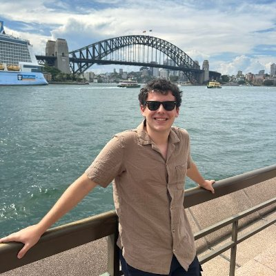
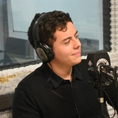

Buenos Aires, Argentina
Comunico ideas con criterio editorial, energía digital y mirada joven.
Soy Vito Mateo Savoia: estudiante de Comunicación Publicitaria e Institucional, redactor, editor y creador de contenidos. Trabajo en proyectos donde conviven SEO, redes, video, entrevistas y estrategia para conectar con audiencias reales.


Perfil
Contenido SEO, edición y comunicación
Universidad Católica Argentina
Quién soy
Un comunicador en formación que ya trabaja en el cruce entre medios, marcas y comunidad.
Me interesa transformar información en contenido claro, útil y atractivo. En Buena Vibra escribo y edito artículos SEO para medios de viajes, actualidad y deportes; también participo en contenido social, videos y acciones junto a marcas como Disney, Universal y SeaWorld.
Mi recorrido también incluye radio: fui columnista y co-conductor en Radiofónicos en Vivo y Enredados, con producción de entrevistas a referentes políticos y sociales. Esa práctica me dio oficio para preguntar mejor, leer contextos y comunicar con ritmo.
En paralelo, curso Comunicación Publicitaria e Institucional en la UCA y presido el Centro de Estudiantes de Comunicación, una experiencia que combina liderazgo, escucha, organización y vocacion por construir comunidad.
Experiencia
Trabajo con contenidos que necesitan claridad, timing y sentido de audiencia.
Producción de artículos SEO para paraviajarporelmundo.com, mundialeros.com, futbolenusa.com y buenavibra.es. Edición de videos para YouTube y gestión de comunidad en Instagram para contenidos de viajes.
- Planificación de publicaciones y apoyo a estrategias de crecimiento.
- Interacción con audiencias en canales sociales.
- Contenido editorial y social en colaboraciones con marcas internacionales.
Participación al aire, producción periodística y entrevistas a referentes políticos y sociales, con análisis de coyuntura y actualidad.
Formación universitaria en publicidad, comunicación institucional, estrategia, creatividad y cultura digital. Presidente del Centro de Estudiantes de Comunicacion.
Mirada profesional
Áreas donde puedo aportar desde el primer día.
Contenido editorial y SEO
Redacción periodística, investigación, titulación, estructura de notas y optimización para buscadores.
Redes y comunidad
Planificación de publicaciones, adaptación de mensajes por plataforma e interacción con audiencias.
Video y formatos digitales
Edición de videos, criterios de ritmo, narrativa visual y reutilización de contenido para YouTube y social.
Entrevistas y actualidad
Producción, preguntas, lectura de contexto y comunicación oral con sensibilidad periodística.
Publicaciones
Tambien escribo sobre viajes, cultura y experiencias.
Mi trabajo en Para Viajar por el Mundo me permite unir investigación, servicio al lector y curiosidad por descubrir destinos, tendencias y formas de contar.
Contacto